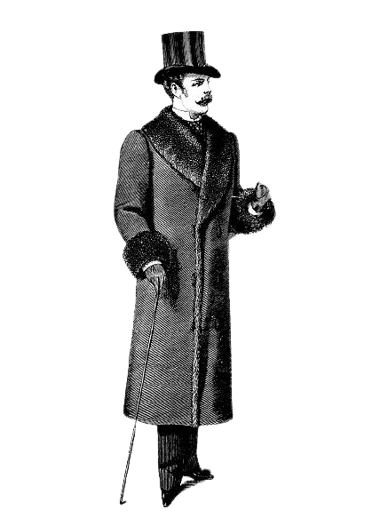

GENTLEMAN'S FASHION

-
Stovepipe Hat
the crown was high, about seven or eight inches, and the sides curved out slightly at the top -
Black Overcoat
The full-length coats varied in fashionable length -
Gaumlet Gloves
Daytime gloves could be leather or cloth in dark colors -
Calf Balmoral Shoes
square-toed and rather long and narrow in shap
ENQUIRY AT THE MINISTRY OF MAGIC
 Arthur Weasley, Head of the Misuse of Muggle Artefacts Office at the Ministry of Magic, has won the annual Daily Prophet Grand Prize Galleon Draw. A delighted Mr Weasley told the Daily Prophet, "We will be spending the gold on a summer holiday in Egypt, where our eldest son, Bill, works as a Curse Breaker for Gringotts Wizarding Bank." The Weasley family will be spending a month in Egypt, returning for the start of the new school year at Hogwarts, which five of the Weasley children currently attend.
Arthur Weasley, Head of the Misuse of Muggle Artefacts Office at the Ministry of Magic, has won the annual Daily Prophet Grand Prize Galleon Draw. A delighted Mr Weasley told the Daily Prophet, "We will be spending the gold on a summer holiday in Egypt, where our eldest son, Bill, works as a Curse Breaker for Gringotts Wizarding Bank." The Weasley family will be spending a month in Egypt, returning for the start of the new school year at Hogwarts, which five of the Weasley children currently attend.